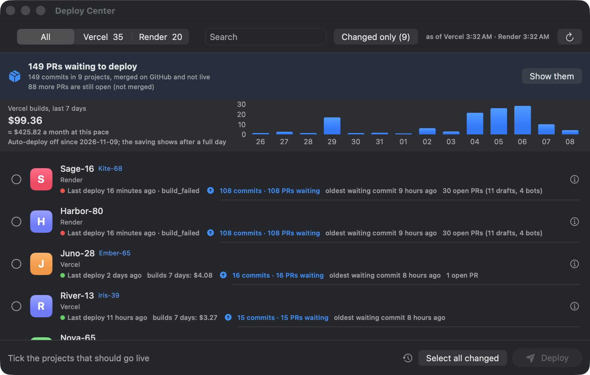

Deploy Center turns off auto-deploy on Vercel and Render in one click, shows what is waiting to go live, and deploys it when you decide. One window for all your projects.
Signed and notarized by Apple · no account · no telemetry · not affiliated with Vercel or Render

The real app with the author's real build bill: $99 in a week. Project names are hidden by demo mode.
Ten small commits in an afternoon are ten builds. A README typo is a build. A monorepo push builds every app connected to it. You only needed the last one live.
Connect once with the logins you already have. Nothing goes through a server of ours.
Vercel uses your vercel CLI login. Render takes an API key, stored in your macOS keychain. GitHub through gh is optional.
One click for every project. On Vercel the Git connection is removed and the repo remembered; on Render auto-deploy is set to Off.
Select all changed, then Deploy. The app ships the newest commit and follows each deploy until it is live or failed.
Built for people with many projects and little patience.
Commits and merged PRs that are on GitHub but not live, per project and in total. Open PRs too.
Vercel build spend for the last 7 days, the monthly pace, a budget with a warning at 80 %.
Failing lines in red, Jump to first error, Errors only, and Copy for Claude to paste a fix request.
Preview deploys and a rollback to the previous live deploy on Vercel, from the right-click menu.
A short wait before a deploy starts, with cancel. Stop all in the footer. No accidental ships.
The number of PRs waiting, building and failed states, and a notification when a deploy ends while the window is in the background.
After a deploy the app opens your page (or /health) and tells you if it really answers.
Replaces project names and domains, so you can share a screenshot without sharing your clients.
⌘R, ⌘F, ⌘1 / ⌘2, Esc, and a deploycenter:// link to jump to a project.
Move the sliders. Your own cost per build is on your Vercel or Render usage page.
Everything the app does, deploys does in your terminal, on a server or in CI. Add --json to any command.
swiftc.vercel CLI, a Render key in the keychain, gh.launchd or a GitHub label.$ deploys changed web-shop 12 commits · 9 PRs waiting api 3 commits · 3 PRs waiting docs up to date $ deploys deploy-changed --yes → web-shop building … → api building … ✓ web-shop live in 48 s ✓ api live in 1 m 12 s $ deploys vercel autodeploy-off --all ✓ 35 projects no longer build on push
Shortened illustration; the real output has a few more columns.
There are good ways to cut builds by hand. Deploy Center is the fast way when you have many projects.
| Ignored Build Step | Disconnect Git by hand | Deploy Center | |
|---|---|---|---|
| Setup for 30 projects | A script per project | 30 settings pages | One click |
| See what is waiting | No | No | Per project and total |
| Deploy many at once | Push again | CLI, one by one | Select all changed → Deploy |
| Render too | Different setting | Different setting | Same window |
| Build costs in view | Dashboard | Dashboard | 7-day chart and budget |
Yes. MIT license, no paid tier, no account. The code is on GitHub.
No server of ours. The app talks to Vercel and Render with your own logins, to GitHub through gh, and once a day to GitHub's release page to look for updates (you can turn that off). No telemetry.
Automatic deploys and automatic preview builds per pull request. You have to remember to deploy; the menu bar count and an optional daily reminder help. Preview deploys can still be started by hand.
Yes. Reconnect the repository in the Vercel dashboard, or set auto-deploy to On Commit in Render. Deploy Center remembers each Vercel repo before it disconnects it.
Vercel and Render today. Cloudflare Pages is being looked at; Netlify cannot start a build while its builds are stopped, so it needs a different approach. Vote or help in the GitHub issues.
The app is macOS only. The deploys script is bash and runs on Linux and in CI.
Free for macOS 15 and newer, Apple silicon and Intel.